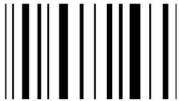

Ingreso
Lucy detecta formas y textura asi como codigos de barras loq que permite que el ingresar información a nuestra web sea más comoda. 
Conexion
Lucy se conecta a travez de su dispositivo wifi a una red para tener acceso a tu inventario directamente, asi que no tentdra que procuparte por como usar tu Lucy más que por comoe encenderla.

Accebilidad
Lucy es muy barata en comparación de los refigeradores inteligentes actules lo que permite un salto de alegria a tu billetera.
¿Que es?
Lucy en un dispositivo RaspBerry que permite que el ingreso de alimentos a tu inventario dentro de cibus sea más facil y rapido.